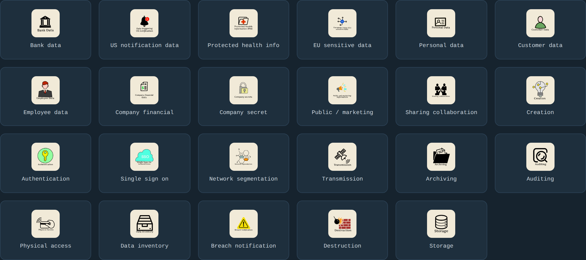
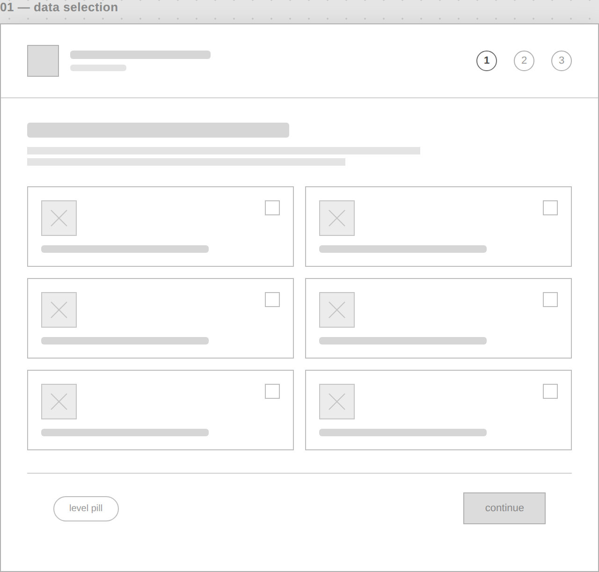
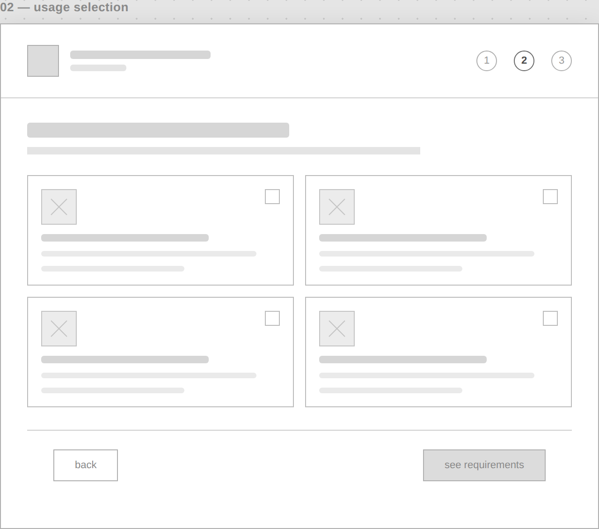
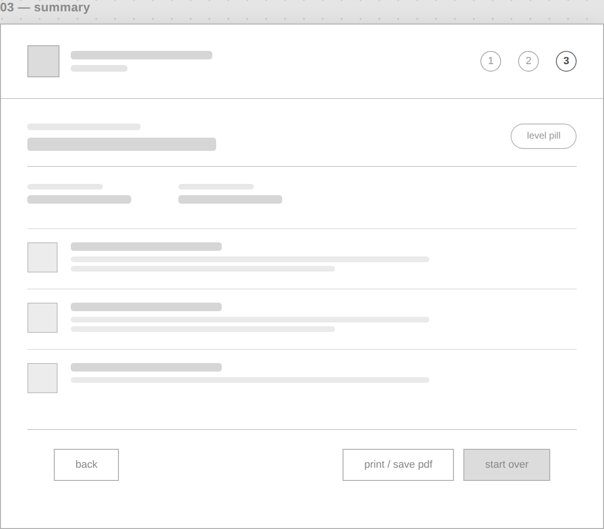
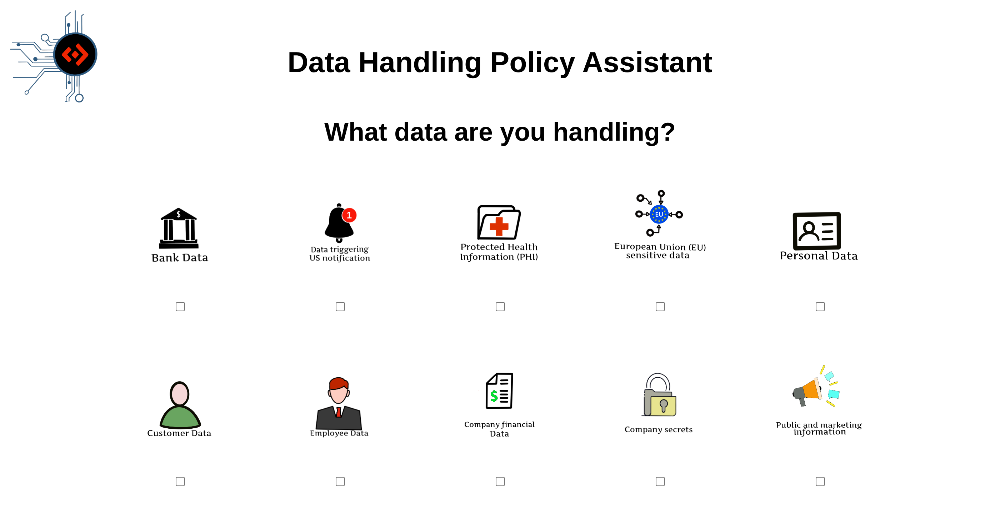
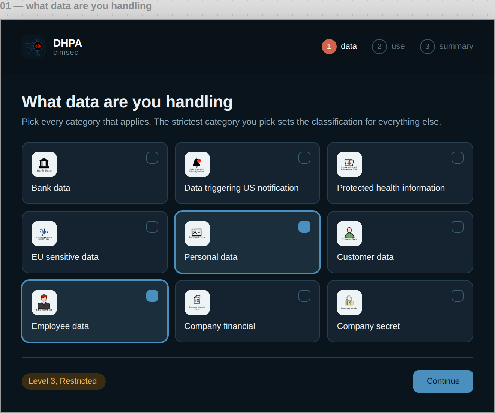
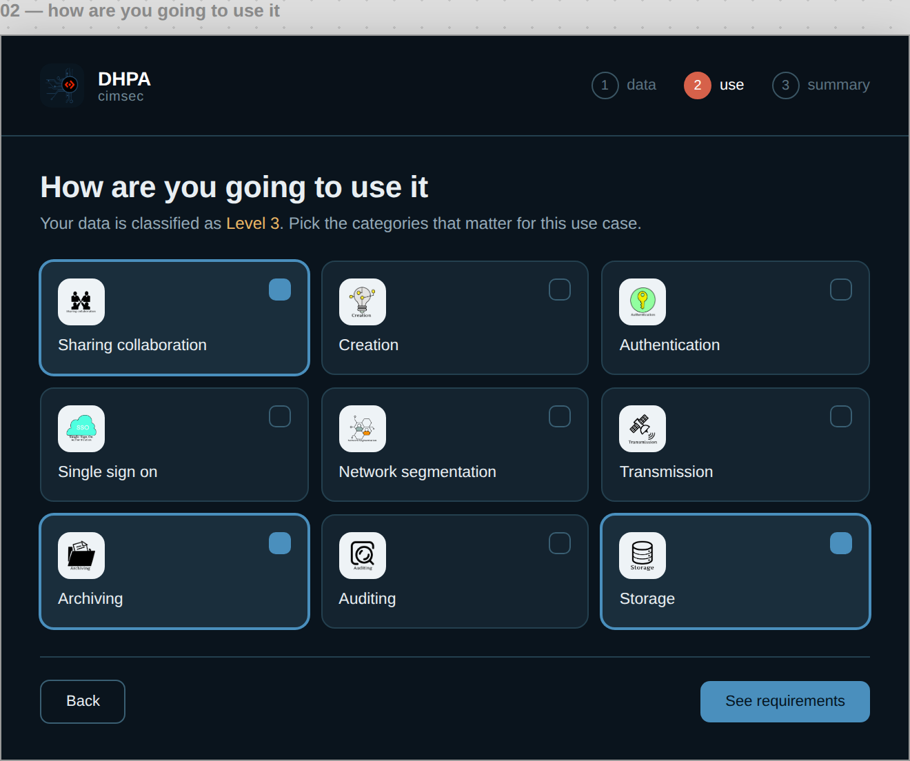
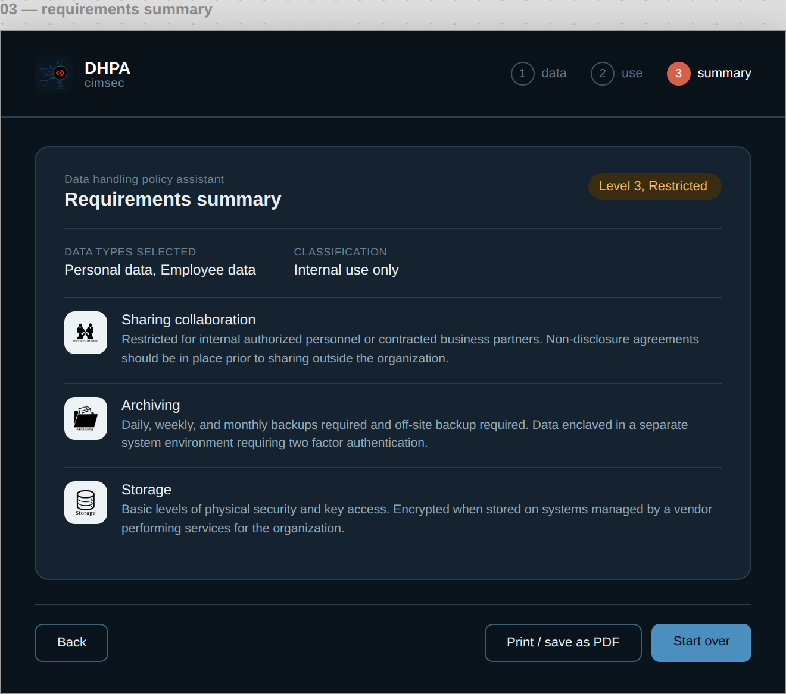

The Policy Was 40 Pages. The Answer Took Three Clicks.
A dense internal security policy nobody wanted to read, turned into a step by step assistant that Cimpress's cyber security team still had running years later.
Scroll to begin ↓"I wasn't designing yet. I was just trying to make forty pages make sense in three clicks."
The Problem
The cyber security team had a policy document that laid out how to handle different categories of company and customer data. It was long, and a lot of it repeated itself, since many data types shared the same handling rules once you sorted them by security level.
If you were an employee trying to figure out how to handle a spreadsheet full of customer emails, you had to dig through pages of text to find the two paragraphs that actually applied to you. Nobody had built anything to fix that gap, and it had been sitting on the team's backlog for a while before it landed with me.
My Process
Shaping the workflow
The core decision was the workflow shape: pick your data types, pick how you're handling that data, get your instructions. Grouping by security level instead of by individual data type let the tool stay short, since so much of the source document's length was repetition once you sorted it that way.
Every part of the flow was my call, including the classification logic and the step order. I checked in with the cyber security team and the development team as I went, and neither raised objections.
The classification rule
One rule runs the whole tool. Whichever data type carries the highest security level sets the level for everything else you selected. That rule came straight from how the security team already thought about mixed data. I didn't have to invent it, just build it.
Building the icon system
The icons were their own project inside the project. Some of the terms in the policy document, like "data triggering US notification" or "breach notification," don't have obvious visual shorthand. I researched what each term actually meant, then sketched interpretations in Procreate on my iPad and exported them as PNGs. I kept text labels under every icon so nobody had to guess.

Every data type and usage category got its own icon, researched and hand-drawn individually rather than pulled from an icon library.
Lo-Fi Wireframes
These three screens weren't sketched out in 2019. This was a developer's project built straight into code. What's shown here reconstructs the flow decisions above the way I'd actually plan them today: three screens, one rule carried through all of them.



Data selection, usage selection, summary. The same three-step shape that shipped, worked out in gray boxes first.
Design Decisions
From a checkbox form to a guided flow
Looking at the earliest version of the code now, the difference is stark. Everything lived on a single page. Selections were plain checkboxes with hover tooltips. Submitting your answers triggered a JavaScript alert() box that dumped your results as plain text. There was a looping video background behind it all, and jQuery was loaded but barely used. It worked, but it looked and felt like a proof of concept, because that's what it was.


The version I eventually shipped moved away from all of that: a real step by step flow, card based selection instead of checkboxes, a printable summary page instead of a browser alert.
The finished flow


Selecting personal and employee data locks the flow to Level 3, and the summary spells out exactly what that means for sharing, archiving, and storage, no more digging through forty pages to find the two paragraphs that apply to you.
Challenges & Tradeoffs
This was my first real project in JavaScript, so I was learning the language while building with it. I kept the logic simple and readable, not clever, mostly because I knew someone else might eventually have to maintain this code without me around to explain it.
I was also doing design and development at the same time, alone, with no design process to fall back on. The visual style ended up close to monochrome. Some of that was a deliberate choice to keep things clean. Most of it was the reality of limited time and no room to explore more than one direction.
Outcome
The tool went live as a static site on the company's AWS environment before my internship ended, so anyone on the team could reach it without extra setup. Internal testers called the workflow intuitive. They liked that it was short, since the role already assumed a baseline of job-related knowledge going in. There was no pushback from the security team on the classification logic or content, which mattered more to me than it probably should have, given how carefully that document had been put together.
I don't know if it's still running today. What I do know is that a former colleague reached out in 2023, four years after I left, asking for help with the code, since they'd taken over maintaining it and some of the underlying policy wording had changed. My manager at the time was glad to see it finished. It had sat unaddressed for a while before I picked it up.
Where This Landed
A note on framing: this was built before I moved into UX. At the time I was a developer, not a designer, and I didn't run a formal design process. The lo-fi wireframes earlier in this case study reconstruct that thinking, they aren't a claim that sketches like these existed back in 2019.
What I'd change first: the color scheme. Close to monochrome was me being cautious with a limited timeline, not a real design decision. I'd also clean up the JavaScript itself. I was learning the language as I wrote it, and it shows.
The bigger difference would be process: I'd test the classification logic against edge cases before building it, and treat the icon set as one system instead of solving each icon on its own. That gap between how I built this and how I'd build it now is why I'm turning it into a case study instead of just linking the old site.